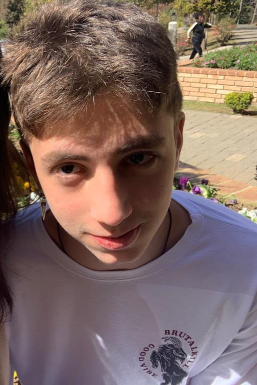

PRIMEIRAMENTE, COMO ISSO REALMENTE FUNCIONA?
Tudo aqui começa quando se clica no botão de pesquisar no campo de input, depois disso o front end manda a palavra pesquisada para o back. Além disso, na comunicação entre front e backend acabei optando por utilizar websocket, e tive de aprender bastante sobre essa solução.
Agora já com a palvra em mãos o back end faz uma requisição de pesquisa à API do Twitter, que tem como resposta um objeto com alguns poucos twitts e outras duas informações sobre eles: o id de cada twitt e o link para o twitt no próprio twitter. Essa etapa do serviço ainda tem a incumbência de descartar o id e chamar o próximo programa tendo como input o conteúdo bruto dos twitts adiquiridos com a requisição.
Depois dessa requisição e filtragem inicial outro programa é executando para gerar uma única palavra secreta. No processo de construção dessa etapa eu desocbri um tipo de programa muito interessante chamado "word tagger", esse programa consiste em uma inteligência artificial que consegue classificar a classe gramatical das palavras. Então ,com um pouco de pesquisa, eu achei um repositório no github com um modelo já treinado e pronto para ser usado na nossa língua portuguesa. Depois disso era só colocar essa inteligência artificial ao meu favor: fiz com que ela descartasse cada palavra que não fosse um substantivo e escolhesse o substantivo com o maior número de palavras, e essa palavra é a que você tem que adivinhar no jogo!!! :)
Por fim, além disso tudo que eu já falei, esse projeto foi hospedado na amazon aws então eu tive de aprender bastante sobre linux e certificacdos ssl, tls esse tipo de coisa.
Realmente sobre mim:
Lucas Janot
• lucassabbatinijp@gmail.com
• (62) 99966-8603
• Uberlândia - MG



Formação :
Cursando Bacharelado em Ciências da Computação
UFU - Universidade Federal de Uberlândia
Experiência:
Por enquanto, esse projeto. No entanto, é evidende ,como se pode ver acima, que eu aprendi bastante durante a confecção desse jogo. De qualquer forma, isso mudará em um futuro próximo.
Comptências Técnicas:
• HTML (intermediário)
• CSS - experiência com responsividade, css grid e flexbox.
• Javascript (intermediário)
• Node.js
• Git
• Linux
• Cloud Computing (AWS)
• Lógica de Programação e Estrutura de Dados
Idiomas:
Inglês Avançado